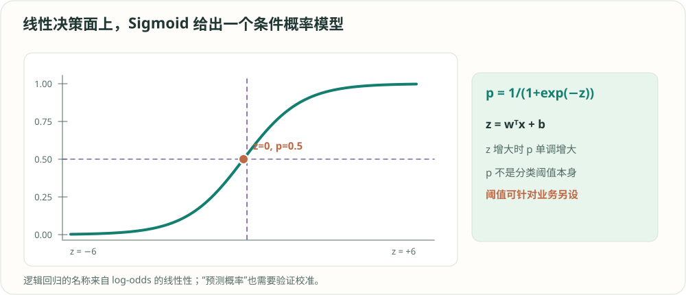
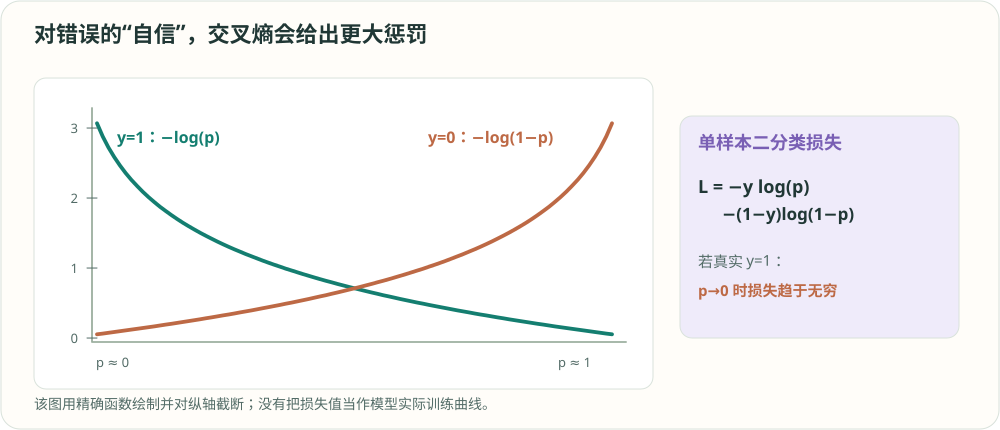

逻辑回归：从线性分数到概率与决策
逻辑回归不是线性回归的分类后处理：它假设对数几率对特征线性，再以 Sigmoid / Softmax 构造概率，并使用对数损失估计参数。
01 · 概率模型与线性分数的边界
二分类逻辑回归首先计算 z=wᵀx+b，这是可以取任意实数的线性打分。随后用 Sigmoid σ(z)=1/(1+exp(−z)) 映射到 0 与 1 之间，得到模型对 y=1 的条件概率估计。它不是把线性回归数值直接裁剪到 [0,1]；参数通常通过对数似然或其等价的交叉熵损失拟合。

当 wᵀx+b=0 时输出恰好 0.5，但这只是默认等概率点；一个业务系统是否按 0.5 转成正类，需要单独设定决策规则。模型形式给出一个条件概率假设，不能只因为输出形式落在 0 到 1 就认定它已校准。
02 · Log-odds 是线性的真正含义
概率的几率（odds）为 p/(1−p)，对其取对数得到 logit：log(p/(1−p))=wᵀx+b。当一个输入特征增加一个单位、其他特征不变时，对数几率改变对应系数；几率则乘以这个系数的指数。它不意味着概率本身增加同样的固定百分点。
系数解释还取决于特征标准化、交互项、变量关联和模型设定。将一个相关变量的系数直接解释为干预该变量的因果作用，会混淆预测建模与因果推断。
03 · 为什么交叉熵而不是普通分类错误率
对标签 y∈{0,1} 与预测概率 p，Bernoulli 负对数似然为 −[ylog(p)+(1−y)log(1−p)]。如果真实类别为正而预测 p 非常小，损失急剧增大；这会让模型为“自信的错误”付出较高代价。直接把正负判错记为 0/1 则不能提供同样平滑的优化信号。

数值实现不应先算出极端概率后天真地对 0 取对数，而通常使用稳定的 log-sum-exp 或 logit 直接计算。正则化可以改善泛化，但它也改变目标，不保证有限样本概率完美校准。
04 · 从阈值改变到线性决策边界
若预测规则是 p≥τ 则判为正类，由 Sigmoid 单调性可知其等价于 wᵀx+b≥log(τ/(1−τ))，其中 0<τ<1。因此当特征固定时，改变阈值会平移这条线性决策超平面的截距条件，而不是把复杂非线性边界训练出来。阈值提高通常降低判为正类的数量，并改变精确率与召回率。
应在开发阶段通过独立验证数据，结合误报/漏报成本选阈值；禁止在测试集上查看多种阈值后挑一个最漂亮的再宣称它是独立评估。
05 · 排序能力、阈值决策、概率校准是三件事
ROC AUC 主要检验正例是否倾向排在负例前，不说明概率大小是否精确；在 0.8 分数附近的样本中，大约 80% 是否为正，才是校准的直觉。Brier score 与 log loss 可以评估概率质量，但也受到可分性和基准率影响。分组可靠性图应显示每箱样本数，不宜凭几条样本曲线断言已校准。
可使用跨验证校准器或保留校准集学习分数到概率的映射；用于校准的标签不应与评估校准效果的最终测试数据混用。即使本身优化对数损失，模型仍可能因设定错误、强正则化或数据漂移而发生校准偏差。
06 · 多分类：OvR 与 Softmax 的假设不同
对 K 个互斥类别，Softmax 将每类线性打分 zₖ 转换为 exp(zₖ)/Σⱼexp(zⱼ)，一条样本所有类别的概率和为 1；训练通常最小化多分类交叉熵。OvR 则分别训练多个“一类对其他类”的二分类器，通常需要额外约定如何归一化或比较输出。scikit-learn 中不同 solver、版本与多分类接口的支持差异需要查阅对应 API，不应将二者当作完全相同的概率模型。
07 · 可运行：用验证集挑阈值，用测试集报告
这里用随机种子固定的合成数据做一个 60/20/20 的训练、验证、测试拆分。先训练二分类逻辑回归，再仅通过验证集的 F1 值选择阈值，最后评估独立测试集。程序输出有实际统计含义，但不代表特定真实业务的性能。
import numpy as np
from sklearn.datasets import make_classification
from sklearn.model_selection import train_test_split
from sklearn.pipeline import make_pipeline
from sklearn.preprocessing import StandardScaler
from sklearn.linear_model import LogisticRegression
from sklearn.metrics import (f1_score, roc_auc_score, log_loss,
brier_score_loss, confusion_matrix)
X, y = make_classification(
n_samples=500, n_features=8, n_informative=4,
n_redundant=2, weights=[0.8, 0.2], random_state=23)
Xdev, Xte, ydev, yte = train_test_split(
X, y, test_size=0.2, stratify=y, random_state=23)
Xtr, Xval, ytr, yval = train_test_split(
Xdev, ydev, test_size=0.25, stratify=ydev, random_state=23)
model = make_pipeline(StandardScaler(),
LogisticRegression(max_iter=1000))
model.fit(Xtr, ytr)
val_prob = model.predict_proba(Xval)[:, 1]
choices = np.arange(0.20, 0.81, 0.05)
val_f1 = [f1_score(yval, val_prob >= t, zero_division=0)
for t in choices]
threshold = float(choices[int(np.argmax(val_f1))])
test_prob = model.predict_proba(Xte)[:, 1]
test_pred = (test_prob >= threshold).astype(int)
print("threshold from validation:", round(threshold, 3))
print("test AUC:", roc_auc_score(yte, test_prob))
print("test log loss:", log_loss(yte, test_prob))
print("test Brier score:", brier_score_loss(yte, test_prob))
print("test confusion:", confusion_matrix(yte, test_pred).tolist())
assert len(test_pred) == len(yte)
assert 0 < threshold < 1依赖 Python 3.10+、NumPy、scikit-learn。此处从有限阈值网格中选 F1 最优，并不代表真正的业务最佳阈值；在类别比例和误差代价变化时，决策规则也可能需要更新。报告阈值时应同时记录验证集与测试集的类别分布。
08 · 什么时候概率看上去正确却不可靠
极端类别不平衡、训练与部署基准率变化、强相关但分布漂移的特征、标签延迟获得或误标，都可能让概率校准失效。若要作高风险决策，应审查模型不确定性、子群误差和人工审核机制，而不是只看一个 AUC 或准确率。